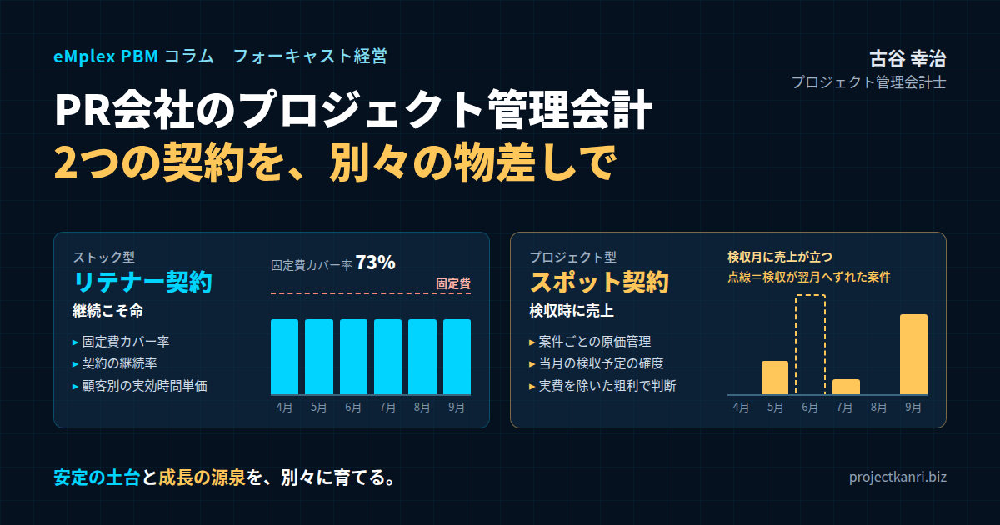

PR会社のプロジェクト管理会計―リテナー契約とスポット契約を別々の物差しで管理する
結論：PR会社の経営管理は、「二つの異なる事業」を別々の物差しで見ることから始まる
最初に結論を申し上げます。PR会社の経営管理を強くするための第一歩は、リテナー契約とスポット契約を、同じ「売上」としてひとまとめに見るのをやめ、性格の異なる二つの事業として、それぞれに合った物差しで管理することです。リテナー契約は、継続こそ命のストック型の事業であり、積み上げた月次の売上と利益が、固定費をどれだけ上回っているかで経営の安定度が決まります。スポット契約は、一件ごとに採算が大きく変わるプロジェクト型の事業であり、案件ごとの原価管理と、検収の予定を正確に見通すことが、利益の予測の肝になります。
PR業では、主に二つの契約の形が使われています。一つは「リテナー契約」と呼ばれる長期の契約です。企業の広報活動を、月額の固定の報酬で継続的に支援するもので、メディアへの情報提供、報道の分析、広報戦略の助言、危機管理の相談といった業務を、年単位で担います。もう一つは「スポット契約」、あるいは「プロジェクト契約」と呼ばれる、特定の活動についての短期の契約です。新商品の発表会、記者会見、イベント、キャンペーン、調査の実施といった、始まりと終わりのはっきりした案件を、一件ごとに請け負います。
多くのPR会社は、この二つの契約を組み合わせて事業を営んでいます。リテナー契約の顧客から、スポットの案件を追加で受注することも珍しくありません。ところが、経営管理の場面では、二つの契約から生まれる売上が、同じ「売上」として合算され、会社全体の月次の損益だけで判断されていることが少なくありません。その結果、「今月は売上が大きいが、それはスポットの検収が重なっただけで、実は基盤となるリテナーの収益は減っている」「リテナーの顧客数は増えているのに、現場は忙しくなるばかりで利益が残らない」といった実態が、見えにくくなってしまうのです。
私はプロジェクト管理会計の専門家として、これまで200社を超えるプロジェクト型企業の経営管理を支援してきました。PR会社や広告会社、イベント会社といった、コミュニケーションの領域の会社も数多く含まれます。その経験から言えるのは、この業界の会社ほど、二つの収益モデルの違いを意識した管理を取り入れたときに、経営の見え方が劇的に変わるということです。
この業界の会社は、社員一人ひとりの専門性と人脈が価値の源泉であり、原価の大部分は社員の時間です。その意味で、PR会社はまさにプロジェクト型ビジネスの典型であり、プロジェクト管理会計の考え方がそのまま生きる業種だと言えます。
私自身、ホリプロで経営企画を担当していた頃、タレントのマネジメントのような継続的な事業と、公演や作品の制作のような一件ごとの事業が、同じ会社の中に並んでいる状態を経験しました。二つは同じ会社の事業でありながら、利益の生まれ方も、管理のポイントもまったく異なりました。継続的な事業は、固定費をいかに安定した収益でまかなうかが問われ、一件ごとの事業は、案件ごとの予算と実績の管理と、収益の計上の時期の見通しが問われました。PR会社のリテナー契約とスポット契約の関係は、まさにこの構図と重なります。
本稿では、リテナー契約とスポット契約という二つの収益モデルの特徴を整理したうえで、それぞれの管理のポイント、リテナー契約に潜む見えにくい採算の悪化、スポット契約の原価管理と売上の計上、フォーキャストの肝となる検収の予定の管理、そして二つの事業をセグメントとして組み合わせて経営する考え方までを、実務の視点から具体的にお伝えします。PR会社だけでなく、広告、デザイン、コンサルティング、Web制作など、継続的な契約と単発の案件を組み合わせて事業を営む会社にも、参考にしていただける内容です。
リテナー契約とスポット契約：PR業の二つの収益モデル
まず、二つの契約の特徴を、経営管理の視点から整理しておきます。
リテナー契約の最大の特徴は、売上の安定性です。月額の報酬が契約で決まっているため、契約が続く限り、毎月ほぼ同じ売上が見込めます。契約の期間は一年単位が多く、更新を重ねて何年も続く関係になることもあります。売上は、通常、サービスを提供した月ごとに計上されます。先の数か月の売上がほぼ確定しているため、経営の見通しが立てやすい事業です。
一方で、リテナー契約には、固有の課題もあります。一つは、報酬が固定であるのに対し、実際にかかる手間は月によって変動することです。顧客の側で大きな発表が続く月や、危機対応が発生した月には、担当者の作業時間が大きく膨らみます。それでも報酬は変わりません。もう一つは、契約が終わったときの影響の大きさです。一社のリテナー契約の終了は、その月から先の売上を、まとまって失うことを意味します。
スポット契約の最大の特徴は、一件ごとの採算のばらつきです。発表会やイベントの案件では、会場の費用、制作物の費用、外部のスタッフの費用など、案件ごとに異なる多くの原価が発生します。見積の精度や、当日までの準備の進め方によって、同じ規模の案件でも、利益が大きく出ることもあれば、赤字になることもあります。
スポット契約の売上は、多くの場合、成果物の納品やイベントの実施が完了し、顧客の検収を受けた時点で計上されます。そのため、準備の期間中は原価だけが発生し、売上は検収の月にまとめて計上されるという、時間のずれが生じます。月次の損益は、検収の時期によって大きく揺れ動きます。
二つの契約の違いを、いくつかの観点から比べてみましょう。
売上の見通しでは、リテナー契約は先の数か月がほぼ確定しているのに対し、スポット契約は受注と検収の時期によって大きく変わります。
管理の単位では、リテナー契約は顧客ごと、月ごとに管理するのが基本であり、スポット契約は案件ごとに、開始から完了までを通して管理します。
利益を左右する要因では、リテナー契約は、月額の報酬に対してどれだけの工数をかけているか、そして固定費をどれだけまかなえているかが鍵になります。スポット契約は、見積の精度と、原価の管理、そして検収の時期が鍵になります。
経営にとっての役割では、リテナー契約は会社の固定費を支える基盤であり、スポット契約は利益を上乗せし、成長の機会を生むものです。
こうして並べてみると、二つの契約は、同じPR会社の売上でありながら、性格のまったく異なる事業であることが分かります。そして、性格が異なる以上、管理の物差しも変えなければなりません。リテナー契約をスポット契約と同じように案件の単位で管理しても、事業の安定度は見えてきません。スポット契約をリテナー契約と同じように月次の売上だけで見ても、案件の採算は見えてきません。二つの事業を分けて管理することが、PR会社の経営管理の出発点なのです。
実際のPR会社の契約は、この二つにきれいに分かれないこともあります。たとえば、月額の基本報酬に加えて、記者会見などの特定の活動が発生した月には追加の報酬を受け取る形や、半年間の期間を定めた定額のキャンペーンの支援といった形です。こうした中間的な契約は、実態に応じて、どちらの事業として管理するのかを社内で決めておきます。私のお勧めは、月額で継続する部分はリテナーの事業として、特定の活動ごとに追加される部分はスポットの事業として、分けて登録する方法です。そうすれば、それぞれの物差しで一貫して管理できます。
二つの契約の違いは、営業の進め方にも表れます。リテナー契約の営業は、長期の関係を築くための信頼づくりが中心であり、受注までに時間がかかる一方、一度獲得すれば長く売上を生みます。スポット契約の営業は、コンペや提案の機会をとらえるスピードが勝負です。営業の成果を評価する際にも、この違いを踏まえた物差しが必要になります。
リテナー契約の管理：継続こそ命、積み上げた月次売上と固定費の関係
リテナー契約は、継続こそ命です。顧客から信頼を得て、長期間にわたって仕事を続けていれば、安定した経営へと持っていくことができます。
リテナー契約の事業を、一つのセグメントとして経営管理するとき、その安定度は、積み上げた月次の売上と利益に対して、固定費の割合が高いか低いかによって変わります。PR会社の主な固定費は、社員の人件費、オフィスの家賃、情報収集のためのデータベースやツールの利用料などです。リテナー契約の月額の報酬の合計が、これらの固定費を大きく上回っていれば、スポットの案件が少ない月でも、会社は安定して利益を出すことができます。逆に、リテナーの報酬の合計が固定費に届いていなければ、会社はスポットの案件の受注に常に追われることになります。
この関係を測るために、私がお勧めしているのが、「固定費カバー率」という指標です。リテナー契約から得られる月次の粗利の合計を、会社の月次の固定費で割ったものです。この比率が百パーセントを超えていれば、リテナー契約だけで固定費をまかなえている状態であり、スポットの案件の利益は、そのまま会社の利益の上乗せになります。百パーセントを下回っていれば、その不足分をスポットの案件で埋めなければなりません。
具体的な数字で考えてみましょう。あるPR会社の月次の固定費が一千五百万円だったとします。リテナー契約が二十社、平均の月額報酬が六十万円で、月の売上は一千二百万円です。リテナー契約にかかる外部の費用が少なく、粗利が一千百万円だとすれば、固定費カバー率は約七十三パーセントです。つまり、毎月四百万円の不足を、スポットの案件の粗利で埋めなければ、会社は赤字になります。スポットの案件の受注が少ない月が続けば、たちまち赤字に転落する、不安定な構造です。
この会社がリテナー契約を五社増やし、粗利が一千三百七十五万円になったとすれば、固定費カバー率は約九十二パーセントに上がります。さらにリテナー契約の単価を見直して、カバー率が百パーセントを超えれば、スポットの案件がゼロの月でも赤字にならない、安定した経営の土台ができあがります。
リテナー契約の事業の管理で、もう一つ重要な指標が、契約の継続率です。一年間でどれだけの契約が更新され、どれだけが終了したのか。継続率が高ければ、新規の顧客の獲得にかけるべき労力は少なくて済みます。継続率が低ければ、いくら新規の契約を獲得しても、底に穴の開いたバケツに水を注ぐように、売上の基盤は積み上がっていきません。
継続率を高めるためには、顧客が契約の価値を実感できるようにすることが欠かせません。毎月の活動の報告で、どのようなメディアに、どのような記事が掲載されたのか、それが顧客の事業にどのような意味を持つのかを、分かりやすく示すこと。顧客の担当者が交代した際に、改めて関係を築くこと。契約の更新の時期より前に、次の一年の広報の計画を一緒に考えること。こうした地道な取り組みが、継続率を支えます。
経営の視点からは、リテナー契約の終了の予兆を早くつかむことも大切です。顧客の担当者の交代、顧客の業績の悪化、報告会への出席者の減少、活動への要望の減少。こうした兆候を、担当者から経営陣に共有する仕組みを作っておけば、契約の終了による売上の減少を、事前に見込んで対策を打つことができます。リテナー契約の事業の見通しは、「今の契約が続く」という前提だけでなく、「どの契約が終了するリスクがあるか」を加味して立てるべきなのです。
新規のリテナー契約を獲得する際には、その契約が固定費カバー率にどれだけ貢献するのかを意識することも大切です。月額の報酬が大きくても、それに見合う以上の工数がかかる契約であれば、粗利への貢献は小さくなります。受注の判断の段階で、想定される月の工数と、それに基づく実効の時間単価を試算しておけば、採算の低い契約を安易に受けることを防げます。
リテナー契約の事業の見通しを立てる際には、契約の更新の時期を一覧にしておくと便利です。今後六か月の間に更新を迎える契約はどれか、そのうち終了のリスクがある契約はどれか、単価の見直しを提案できる契約はどれか。更新の時期ごとに契約を並べておけば、事業の売上がどの時期に、どれだけ変動する可能性があるのかが一目で分かります。更新の数か月前から顧客と次の一年の計画を話し合う習慣をつければ、継続率の向上と単価の見直しの両方につながります。
リテナー契約の落とし穴：見えないオーバーサービス
リテナー契約の事業には、見落とされがちな大きな落とし穴があります。それは、報酬が固定であるがゆえに、契約ごとの採算の悪化が見えにくいことです。
月額六十万円の契約を例に考えてみましょう。契約を結んだ当初は、担当者が月に四十時間程度の作業で対応できると見込んでいたとします。一時間あたりの報酬は一万五千円です。ところが、顧客との関係が深まるにつれて、依頼される業務が少しずつ増えていきます。「ついでにこの資料も見てほしい」「この取材にも同席してほしい」「社内向けの説明会の準備も手伝ってほしい」。一つひとつは小さな依頼でも、積み重なると、月の作業時間は八十時間に膨らんでいます。一時間あたりの報酬は七千五百円に半減しました。それでも、会社の損益の上では、この契約は毎月六十万円の売上を生む「良い顧客」に見え続けます。
これが、リテナー契約のオーバーサービス、つまり、契約の範囲や報酬に見合わない過剰なサービスの提供です。顧客との関係を大切にしたいという担当者の善意から始まることが多く、誰も問題だと気づかないまま、採算が静かに悪化していきます。
オーバーサービスを見える化するための唯一の方法は、リテナー契約についても、顧客ごとの工数を記録することです。担当者が、どの顧客の業務に、何時間を使ったのかを日々記録し、月ごとに顧客別に集計します。そして、月額の報酬を工数で割った、実効の時間単価を計算します。実効の時間単価が、会社として目標とする水準を下回っている顧客が、オーバーサービスの疑いがある顧客です。
工数の記録は、スポットの案件だけに必要なものだと思われがちです。しかし、報酬が固定であるリテナー契約こそ、工数を記録しなければ採算が見えない事業なのです。スポットの案件は、少なくとも案件ごとの外部の費用と売上は帳簿に表れます。リテナー契約の主な原価は社員の時間であり、それは工数を記録しない限り、どこにも表れません。
オーバーサービスが見えたら、対応を考えます。対応の選択肢は、大きく三つあります。一つ目は、契約の範囲を顧客と改めて確認することです。契約で定めた業務と、それを超える依頼を区別し、範囲外の依頼については、別途スポットの案件として見積もることを提案します。二つ目は、契約の更新の際に報酬を見直すことです。実際の工数の記録を根拠として示せば、顧客にも納得してもらいやすくなります。三つ目は、社内の業務の進め方を見直すことです。報告書の作成や報道の分析といった定型の業務を効率化すれば、同じ報酬でも工数を減らすことができます。
大切なのは、こうした対応を、担当者一人の判断に委ねないことです。顧客との関係を大切にしている担当者ほど、範囲の確認や報酬の見直しを顧客に切り出しにくいものです。工数のデータをもとに、事業の責任者や経営陣が判断し、必要であれば顧客との交渉にも同席する。オーバーサービスへの対応は、組織として取り組むべき経営の課題です。
私の支援先のあるPR会社では、リテナー契約の顧客ごとの実効の時間単価を初めて計算したところ、上位の数社の顧客で、目標の半分以下の水準になっていることが分かりました。いずれも長年の付き合いがあり、社内では「大切な顧客」とされていた会社でした。この会社は、次の更新の時期に、工数の実績を示しながら契約の範囲と報酬について顧客と話し合い、多くの顧客で報酬の改定か、範囲の見直しに合意を得ることができました。
オーバーサービスの問題は、担当者の働き方にも影響します。報酬に見合わない業務が積み重なると、担当者は常に忙しく、疲弊していきます。そして、その忙しさは、会社の売上の増加としては表れません。顧客ごとの工数を見える化することは、会社の採算を守るだけでなく、担当者を過度な負担から守ることにもつながるのです。リテナー契約の担当者が、複数の顧客を掛け持ちしている場合は、個人ごとの総工数も確認し、負荷が偏っていないかを見ておくことをお勧めします。
スポット契約の管理：検収時売上とプロジェクトごとの原価管理
スポット契約は、主に検収の時点で売上が計上されます。だからこそ、しっかりとしたプロジェクトごとの原価管理が重要になります。
スポットの案件では、準備の期間中に、社員の工数や、外部の協力会社への支払い、会場の費用などの原価が先に発生していきます。売上が計上されるのは、イベントが終わり、成果物が納品され、顧客の検収を受けた後です。つまり、案件が進んでいる間、会社の帳簿には原価だけが積み上がっていき、その案件が最終的に利益を生むのかどうかは、売上が計上されるまで損益の上には表れません。案件の途中で原価が膨らんでいても、月次の損益を見ているだけでは気づけないのです。
そこで必要になるのが、案件ごとの予算・実績・着地見込みの管理です。受注の時点で、案件ごとに売上と原価の予算を立てます。原価は、社員の工数に基づく労務費、協力会社への外注費、会場や制作物などの実費に分けて見積もります。案件が進むにつれて、実際に発生した原価を記録し、完了までにあといくらかかるのかを見込んで、着地の原価と粗利を予測します。予算の原価に対して、実績の消化が作業の進み具合より早すぎる案件は、原価が超過する可能性が高い案件です。
スポットの案件で原価が膨らむ典型的な原因には、いくつかのパターンがあります。顧客からの要望の追加や変更に、追加の費用の合意なしに対応してしまうこと。会場や機材の手配が直前になり、割高な費用を払わざるを得なくなること。準備の段取りが悪く、社員や外部のスタッフの作業時間が膨らむこと。イベントの当日のトラブルへの対応で、想定外の費用が発生すること。こうした原因を、案件ごとの原価の記録から振り返ることで、次の案件の見積や準備の進め方を改善できます。
PR会社のスポットの案件で、特に注意したいのが、実費の扱いです。イベントの会場費、印刷物の制作費、広告の出稿費など、PR会社が顧客のために立て替え、そのまま顧客に請求する費用が、案件の中に大きな割合を占めることがあります。こうした実費を含めた売上の総額と、PR会社自身の報酬の部分とでは、案件の規模の見え方がまったく違います。
経営管理の上では、実費を含めた売上だけで案件の大きさを判断すると、実態を見誤ります。売上が一千万円の案件でも、そのうち八百万円が会場費などの実費であれば、PR会社自身が生み出した付加価値は二百万円にすぎません。案件の採算を比べる際には、売上から実費や外注費を差し引いた粗利、あるいは社員の工数あたりの粗利で見ることが大切です。
なお、会計上も、こうした実費を売上として総額で計上するのか、手数料の部分だけを純額で計上するのかは、収益認識の会計基準のもとで、自社がその取引の本人に当たるのか、代理人に当たるのかによって判断が分かれます。会社の状況や契約の内容によって判断が異なるため、監査人や顧問税理士と確認しておくことをお勧めします。
スポットの案件のもう一つの注意点は、受注前の作業です。PR業界では、コンペの形で企画の提案を求められることがよくあります。提案の準備には、多くの社員の時間がかかります。受注できなかった提案の工数は、どの案件の原価にもなりませんが、会社にとっては確かなコストです。提案の工数も記録しておけば、提案の勝率と、一件の受注に平均でどれだけの提案の工数がかかっているのかが分かります。この数字は、どのコンペに参加すべきかを判断する材料になります。
スポットの案件の見積の精度を上げるには、完了した案件の振り返りが欠かせません。案件ごとに、予算と実績の原価を、労務費、外注費、実費の区分ごとに比べ、どこで予算とずれたのかを確認します。発表会、記者会見、調査、キャンペーンといった案件の種類ごとに、実績の工数と原価の傾向が蓄積されていけば、次の見積は、経験と勘ではなく、自社のデータに基づいて作れるようになります。
フォーキャストの肝：当月の検収予定は、予定通りか
スポット契約の事業のフォーキャスト、つまり将来の業績の見通しを立てるうえで、最も重要なのは何でしょうか。私は、当月にあがる予定の検収が、予定通りに進んでいるかどうかを確認することが、利益の予測の管理の肝だと考えています。
スポットの案件の売上は、検収の時点で計上されます。つまり、今月の売上の見通しは、今月に検収を予定している案件の一覧そのものです。その一覧の中の案件が、予定通りに検収されれば、今月の売上は見通しどおりになります。一件でも検収が翌月にずれ込めば、その案件の売上は今月から消え、翌月に移ります。原価はすでに発生しているため、今月の利益は大きく減ります。
具体的な数字で考えてみましょう。あるPR会社の今月の売上の見通しが、リテナー契約で一千二百万円、スポットの案件の検収で一千八百万円、合計三千万円だったとします。スポットの案件は五件で、そのうち最も大きな案件が、八百万円の新商品発表会です。この発表会が顧客の都合で翌月に延期になれば、今月の売上は二千二百万円に減ります。発表会の準備の原価の多くは今月までに発生しているため、今月の利益は、八百万円近く見込みを下回ることになります。会社全体の月次の損益だけを見ていると、「今月は急に業績が悪化した」ように見えますが、実際には、利益が翌月に移っただけです。
こうした揺れに振り回されないためには、検収の予定を案件ごとに一覧にし、その確度を毎月、あるいは毎週確認する仕組みが必要です。私がお勧めしているのは、当月の検収を予定している案件について、確度を三段階で管理する方法です。「確定」は、イベントの実施や成果物の納品が完了し、顧客の検収の手続きを待つだけの状態。「高い」は、実施日や納品日が確定しており、準備も予定どおりに進んでいる状態。「注意」は、実施日の変更の可能性がある、顧客の承認が遅れている、準備に遅れが出ているといった、ずれのリスクがある状態です。
「注意」の案件については、ずれの原因と、予定通りに検収を迎えるための打ち手を確認します。顧客の承認が遅れているなら、承認の期限を顧客と改めて確認する。準備が遅れているなら、要員を補強する。それでも翌月にずれ込むことが避けられないなら、早い段階で見通しを修正し、経営陣に報告します。月末になってから「実は来月にずれました」と報告されるのと、月の初めに「ずれの可能性があります」と報告されるのとでは、経営陣が打てる手がまったく違います。
検収の予定の管理は、翌月以降の見通しにもつながります。今月から翌月にずれ込む案件、翌月以降に検収を予定している案件、そして受注の見込み案件を積み上げれば、先の数か月のスポットの事業の売上と利益の見通しが立ちます。これに、リテナー契約の事業の見通しを加えれば、会社全体のフォーキャストになります。
検収のずれは、会計期間をまたぐと、さらに大きな意味を持ちます。期末の月に予定していた大型の案件の検収が翌期にずれ込めば、今期の業績の見通しは大きく変わります。期末に近い月の検収の予定は、特に注意深く確認し、ずれのリスクがある案件は、早めに悲観的な見通しにも織り込んでおくことが大切です。
検収のずれが繰り返し起きる顧客や案件の種類があれば、その原因を掘り下げることも大切です。顧客の社内の承認の手続きに時間がかかる、成果物の修正の回数が多い、といった原因が分かれば、契約の段階で検収の手続きや修正の回数を取り決めておく、スケジュールに余裕を持たせる、といった対策を打てます。検収の予定の管理は、利益の予測のためだけでなく、顧客との取引の進め方を改善する手がかりにもなるのです。
リテナー契約の事業の見通しとスポット契約の事業の見通しを重ねて見ると、会社全体の月ごとの利益の波が見えてきます。スポットの検収が集中する月と、少ない月。リテナーの更新が重なる月。この波が分かれば、資金繰りの計画や、スポットの案件の受注の時期の調整、社員の休暇の計画にも生かすことができます。
セグメントとしての経営管理：二つの事業をどう組み合わせるか
リテナー契約とスポット契約をそれぞれの物差しで管理できるようになったら、次は、二つの事業を会社全体としてどう組み合わせるかを考えます。ここで役立つのが、二つの事業をセグメントとして分けて、損益を見る考え方です。
セグメントの損益を作る際には、まず、売上と直接の原価を、リテナー契約の事業とスポット契約の事業に分けます。売上は契約の種類で自然に分かれます。直接の原価のうち、外注費や実費は案件や顧客に紐づけて分けます。社員の人件費は、工数の記録をもとに、どちらの事業の業務にどれだけの時間を使ったかで配分します。多くのPR会社では、同じ社員がリテナーの顧客の業務とスポットの案件の両方を担当しているため、工数の記録がなければ、人件費を二つの事業に正しく分けることはできません。
次に、家賃や管理部門の人件費といった共通の費用の扱いを決めます。共通の費用を、売上の比率や工数の比率で二つの事業に配分する方法もありますが、配分の方法によって事業の損益の見え方が変わるため、議論が複雑になりがちです。私がお勧めしているのは、まずは直接の原価までの粗利で二つの事業を比べ、共通の費用は会社全体の固定費として扱う方法です。先ほどの固定費カバー率の考え方と組み合わせれば、「リテナーの粗利で固定費のどれだけをまかない、スポットの粗利でどれだけの利益を上乗せしているか」という、会社の利益の構造が一目で分かります。
セグメントで見ると、二つの事業の役割がはっきりします。リテナー契約の事業は、会社の固定費を支える土台です。利益率が極端に高くなくても、安定して固定費をまかなってくれることに価値があります。スポット契約の事業は、利益を上乗せし、新しい顧客との接点を生み、社員に新しい経験の機会を与えるものです。利益の変動は大きいものの、会社の成長の源泉になります。
二つの事業のバランスをどう取るかは、会社の方針によって異なります。リテナー契約の比率を高めれば、経営は安定しますが、成長の速度は緩やかになりがちです。スポット契約の比率を高めれば、大きな利益を得られる可能性がある一方で、業績の変動は大きくなります。大切なのは、自社がどちらの方向を目指すのかを意識的に決め、その方針に沿って、営業の力点や、人員の配置を判断することです。
人員の配置の面では、二つの事業が同じ社員を奪い合うという問題もあります。スポットの大型案件の準備が佳境に入ると、リテナーの顧客への対応が手薄になりがちです。逆に、リテナーの顧客の危機対応が発生すると、スポットの案件の準備が遅れます。社員ごとの工数を、リテナーとスポットに分けて見える化しておけば、どちらかに負荷が偏っていないかを確認し、早めに調整することができます。
リテナーの顧客からスポットの案件を受注する流れにも注目してください。リテナー契約を通じて顧客の事業を深く理解しているからこそ、新商品の発表会やキャンペーンといったスポットの案件を提案できる。これは、PR会社にとって最も効率の良い受注の形です。リテナーの顧客ごとに、スポットの案件の受注の実績も合わせて見れば、リテナー契約が会社全体の収益にどれだけ貢献しているのかを、より正確に評価できます。月額の報酬だけを見ると採算の低い顧客でも、スポットの案件を含めれば、会社にとって重要な顧客であることもあるのです。
セグメントの損益は、月次で見るだけでなく、四半期や半期の単位で見ることも有益です。スポットの事業の損益は、検収の時期によって月ごとに大きく揺れるため、単月では実力を判断しにくいからです。数か月の単位で見れば、揺れがならされ、スポットの事業が実際にどれだけの利益を生んでいるのかが見えてきます。
導入の流れと、現場への定着
ここまでお伝えした管理の仕組みを導入する際の流れを、整理しておきます。
最初の段階では、契約の一覧を整えます。リテナー契約については、顧客、月額の報酬、契約の期間、更新の時期、契約で定めた業務の範囲を一覧にします。スポットの案件については、受注済みの案件と見込みの案件について、売上と原価の予算、実施日、検収の予定の時期を一覧にします。この一覧を作るだけでも、会社の収益の構造がかなり見えてきます。
次の段階では、工数の記録を始めます。リテナーの顧客ごと、スポットの案件ごとに、社員が日々の作業時間を記録します。入力の負担を減らすため、選択肢から顧客や案件を選び、時間を入れるだけの簡単な形にします。
三つ目の段階では、月次の管理の場を作ります。経営会議で、リテナー契約の事業の固定費カバー率と継続率、顧客ごとの実効の時間単価、スポットの案件ごとの予算・実績・着地見込み、そして当月と翌月の検収の予定とその確度を確認します。
四つ目の段階では、その数字をもとに、顧客との範囲の確認や報酬の見直し、スポットの案件の見積の改善、人員の配置の調整といった判断を行い、その結果を翌月以降に確認していきます。
現場からは、「工数の記録は面倒だ」「クリエイティブな仕事を時間で測るのはなじまない」という声が挙がることがあります。こうした声には、工数を記録する目的が、社員を監視することではなく、オーバーサービスで報われていない仕事を見える化し、適正な報酬を顧客に求めるためであることを、丁寧に伝えることが大切です。実際に工数のデータをもとに顧客との報酬の見直しが実現すれば、それは社員にとっても、自分たちの仕事の価値が認められた経験になります。
ここで、よくいただく質問にお答えしておきます。
「リテナー契約の工数まで記録する必要があるか」という質問です。先ほど述べたとおり、報酬が固定であるリテナー契約こそ、工数を記録しなければ採算が見えません。最初は、主要な顧客に絞って記録を始めるのでも構いません。
「スポットの案件の売上は、検収の時点以外で計上することはできないか」という質問もよくいただきます。収益認識の会計基準では、契約の内容によっては、一定の期間にわたって進捗に応じて収益を認識する場合もあります。ただし、PR会社のスポットの案件の多くは、検収の時点で計上する実務が一般的です。自社の契約について、どの方法が適切かは、監査人や顧問税理士と確認してください。管理会計の上では、会計上の計上の時期とは別に、案件ごとの着地見込みを把握しておくことが大切です。
エンプレックスでCFOを務めていた頃、保守のような継続的な契約と、開発のような一件ごとの案件を、同じ仕組みの中で管理していました。継続的な契約も一つのプロジェクトとして登録し、月ごとの工数と報酬を記録することで、案件と同じように採算を見られるようにしたのです。この経験から、PR会社のリテナー契約も、プロジェクトの管理の仕組みの中で扱うことが、最も自然で無理のない方法だと考えています。
導入の期間の目安としては、契約の一覧の整備と工数の記録の開始に一か月から二か月、月次の管理の場の定着に三か月程度を見ておくと、無理のない計画になります。最初から完璧を目指さず、まずは主要な顧客と大型の案件に絞って始め、運用しながら対象を広げていくことが、定着への近道です。
経営陣の関与も欠かせません。経営会議で、リテナーの顧客ごとの実効の時間単価や、検収の予定の確度が毎月取り上げられ、それに基づいて判断が下されるようになれば、現場も工数の記録や予定の更新を大切にするようになります。数字が使われることが、数字の質を高める最大の原動力です。
まとめ：安定の土台と成長の源泉を、別々の物差しで育てる
PR会社の経営管理を強くするための考え方を、本稿では、リテナー契約とスポット契約という二つの収益モデルの違いから整理してきました。
リテナー契約は、継続こそ命です。積み上げた月次の売上と利益が、固定費をどれだけまかなえているか、つまり固定費カバー率と、契約の継続率が、事業の安定度を決めます。そして、報酬が固定であるがゆえに見えにくいオーバーサービスを、顧客ごとの工数の記録と実効の時間単価で見える化することが欠かせません。
スポット契約は、主に検収の時点で売上が計上されるからこそ、案件ごとのしっかりとした原価管理が重要です。予算・実績・着地見込みを案件ごとに管理し、実費を含めた売上の総額に惑わされず、粗利で採算を判断します。そして、フォーキャストを見るためには、当月にあがる予定の検収が、予定通りかどうかを確認することが、利益の予測の管理の肝になります。
二つの事業をセグメントとして分けて見れば、リテナー契約が会社の固定費を支える土台であり、スポット契約が利益を上乗せし成長を生む源泉であるという、会社の利益の構造がはっきりと見えてきます。
最初の一歩として、まずはリテナー契約の上位五社について、先月の工数を担当者に振り返ってもらい、実効の時間単価を計算してみてください。そして、今月と来月に検収を予定しているスポットの案件の一覧を作り、それぞれが予定通りに進んでいるかを確認してみてください。この二つの作業だけでも、会社の利益の構造について、これまで見えていなかった多くのことが見えてくるはずです。
私たちが提供している「eMplex PBM」は、プロジェクトごとの予算・実績・着地見込みの管理と、日々の工数の記録を一つの基盤で行えるサービスです。リテナーの顧客とスポットの案件をそれぞれプロジェクトとして登録すれば、顧客ごとの実効の時間単価も、案件ごとの着地見込みも、同じデータから確認できます。検収の予定の時期を案件ごとに管理し、会社全体の売上と利益の見通しに積み上げることもできます。
安定した土台の上に、成長の機会を積み重ねていく。それが、リテナー契約とスポット契約を組み合わせて事業を営むPR会社の、理想的な経営の姿だと私は考えています。そのためには、二つの事業を、それぞれに合った物差しで、丁寧に育てていくことが必要なのです。
PR会社の仕事は、顧客の想いを社会に届ける、創造性にあふれた仕事です。その創造性を長く発揮し続けるためにも、会社の土台となる数字の管理は欠かせません。数字の管理は創造性の敵ではなく、創造的な仕事に安心して打ち込める環境をつくるための支えなのです。